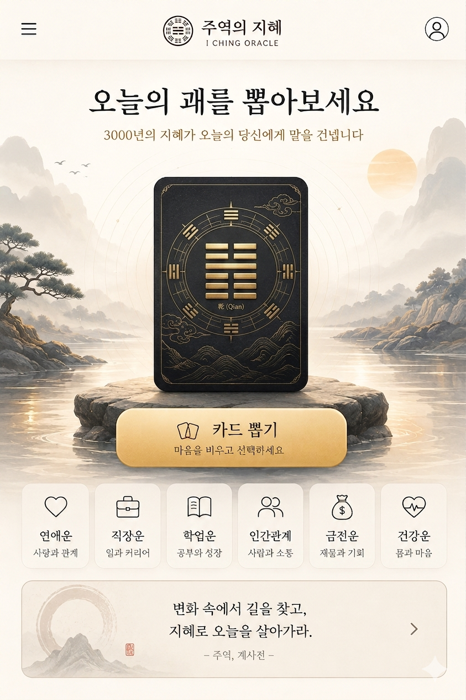

周易
· KOREAN ORACLE
오늘의 점

오늘의 괘를
뽑아보세요
3000년의 지혜가 오늘의 당신에게 말을 건넵니다
🃏
카드 뽑기
마음을 비우고 선택하세요
易
변화 속에서 길을 찾고,
지혜로 오늘을 살아가라.
— 주역, 계사전 —
0/64
0
‹ 처음으로
STEP 1
어떤 고민인가요?
‹ 카테고리
STEP 2 ·
덱을 좌우로 넘기다, 끌리는 카드를 누르세요.
— 64장 중 한 장이 당신을 부릅니다 —
STEP 3 · 카드 공개
주사위 굴리기 ▸
STEP 4 · 효(爻) 정하기
주사위를 굴려 1~6효 중 하나를 받습니다.
주사위 굴리기 🎲
해석 보기 ▸
‹ 처음으로
0 / 64
모은 카드를 눌러보세요
‹ 처음으로
점 기록
전체 지우기
🏠
홈
🃏
도감
📜
기록